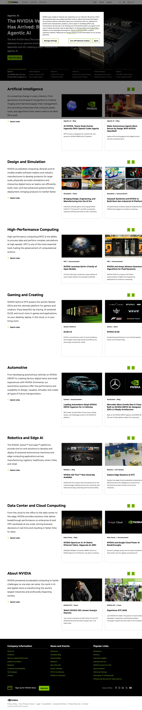

Nvidia 主题
Nvidia 的 Design.md 主题展示，围绕媒体内容、B2B 产品、企业服务、能源运营组织页面。
GPU computing. Green-black energy, technical power aesthetic.
媒体内容B2B 产品企业服务能源运营SaaS 产品开发工具浅色界面效率工具专业工具

来源
- 来源
- getdesign.md
- 镜像
- github:VoltAgent/awesome-design-md
- 网站
- https://nvidia.com/
- 详情
- https://getdesign.md/nvidia/design-md
色板
#000000: #000000#76b900: #76b900#0046a4: #0046a4#5a8d00: #5a8d00#ffffff: #ffffff#f7f7f7: #f7f7f7#1a1a1a: #1a1a1a#cccccc: #cccccc#5e5e5e: #5e5e5e#757575: #757575#898989: #898989#a7a7a7: #a7a7a7
字体
display: NVIDIA-EMEAbody: NVIDIA-EMEAmono: ui-monospacehints: NVIDIA-EMEA,ui-monospace,Inter
圆角
control: 2pxcard: 2pxpreview: 0pxpill: 9999pxsource: design-md
间距
xxs: 2pxxs: 4pxsm: 8pxmd: 12pxlg: 16pxxl: 24pxxxl: 32pxsection: 64pxsource: design-md
使用建议
建议
- 建议：Reserve {colors.primary} for primary CTAs, active states, decorative corner squares, and the NVIDIA wordmark itself. Treat it as a precious resource。
- 建议：Stack hero/footer chapters in {colors.surface-dark} and body sections in {colors.canvas} — alternate them in a predictable rhythm down the page。
- 建议：Anchor a {component.corner-square} to one corner of every reusable card. It is the system's identity tag。
- 建议：Use {rounded.sm} (2px) on every interactive element. Never go to 0, never go past 4。
- 建议：Build hierarchy from font weight (400 vs 700) and size, not from color tinting. Body text stays {colors.ink} or {colors.body} regardless of context。
避免
- 避免：introduce drop shadows on cards or content surfaces. The only allowed shadow is the 5px ambient on sticky chrome。
- 避免：substitute {colors.success-deep}, {colors.accent-green-pale}, or any other green for {colors.primary} in CTAs. The brand green is precise。
- 避免：use {colors.link-blue} outside of inline body-prose links. It is not a button color, not a chrome color。
- 避免：soften the geometry. No pill buttons, no rounded cards, no {rounded.lg} or higher anywhere except avatars and social icons。
- 避免：pad the hero {component.hero-card-dark} symmetrically. Copy hugs the left third; imagery fills the right。
查看 DESIGN.md